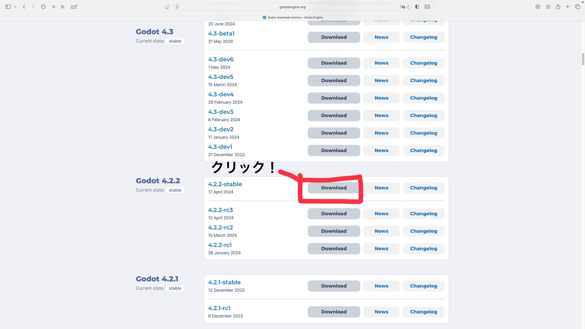

Godotのチュートリアル未完走でゲームを作ってみた話 Part0
みなさん、Godotをご存知ですか？GodotはUnity、UE5(Unreal Engine)にならぶ最近注目されてるゲーム開発エンジンの1つです。今回から、HTMLをマスターした私、ロクペンがゲームを作っていこうと思います。このシリーズでは私がゲームを作っている時に学んだことや起こったことを言える範囲でみなさんに共有していこうと思うのでよろしく！この記録がみなさんの役に立てたら嬉しいです。では早速やっていきましょう。
~DAY1 - 2025/6/22（土）~
じゃあ、まずは環境から整えていきましょう！
今回インストールするのは以下の通りです。
- Godot.NET4.2.2（当時LTS）
- Blender4.4.3（当時最新版）
- (Visual Studio Code（マケプレ）: C# dev kit / Godot Tool)
.NETSDKって何？そもそも.NETとは？
.NET（ドットネット）は、Microsoftが提供するアプリ開発のためのプラットフォームです。C#などの言語で書いたコードをコンピューターで動かすための「実行環境（ランタイム）」や「コンパイラ」、便利な機能がそろったライブラリなどを含んでいます。Windowsだけでなく、macOSやLinuxでも動作し、Webアプリやゲーム、デスクトップアプリなど、さまざまな用途で使われています。無料で利用でき、プロ・個人を問わず幅広く使われている開発基盤です。
こちらはとても深く、詳しく解説していると1つの記事にできるレベルなので、後日別の記事にて詳しく解説しようと思います。
.NET SDK8.0をインストールしよう！
インストール方法は以下の通りです。
1. https://dotnet.microsoft.com/ja-jp/downloadを開き、.NET 8.0の方の「Download」を押す。
私はiMacを使っているので上記した手順なのですが、Windowsだと違うようです。
自分のパソコンがIntelとApple Siliconのどちらかですが、設定を見ればわかります。
IntelはCore i7やi5となっているはずです。
AppleSiliconはM1チップやM2 Proなどとなっているはずです。

これがないと始まらない！Godotをインストールだ！
早速、Godotをインストールしていきましょう！
手順は以下の通りです。
1. https://godotengine.org/ja/へ飛び、最新版ダウンロードのボタンの下の、「Godot 3や実験的バージョン、または過去のリリースをお探しですか？」の過去のリリースをタップ。
2. 下にスクロールし、Godot 4.2の4.2.2-Stableをタップ
3. あなたの機種の列の.NETをタップでダウンロード開始！
最初に言っておきます。この時はまだ気づいていなかったのですが、Godot4.4はあまりおすすめはできません。たくさんの新しいバージョンが出ていて、改善したかもしれませんが、4.4.1では原因不明なバグや仕様が多かったです。なので私はLTSである4.2.2をダウンロードすることをお勧めします。
まず、Godotをダウンロードして思いました。「ダウンロード早ッ！」ほんの1分で終わりました。自分はUnityみたいに30分近くかかると思っていたのですが、意外でした。そして起動も早いです。ほんの数十秒で終わっています。Godotは本当に軽いですね。
Godotって何？最近注目の超軽量ゲーム開発エンジン！
Godot（ゴドー 私は最初ゴードットと思っていた）は無料で使えるオープンソースのゲームエンジンです。非常に軽量で動作も軽快ですが、だからと言って機能が少ないとか侮ってはいけません。Godotは2D・3D両方のゲーム開発に対応していて、アニメションから物理エンジン、UIシステム、シェーダーに至るまで、ゲーム制作に必要な機能が一通り揃っています。
また、Godot独自の設計思想として「Node（ノード）とScene（シーン）」の概念があります。ゲーム内のキャラクターやUIなどは全てNode（ノード）と呼ばれる部品で構成されており、それらを組み合わせたものがSceneになります。これによって柔軟かつ簡単に再利用性の高いゲーム構造の構築が可能になります。
さらに、Godotには独自のスクリプト言語「GDScript」が搭載！Pythonに似た文法で学習コストが低いのも魅力（私はC#でやっていますがね）。軽量ながら機能も豊富で初心者からプロまで幅広く活用できるエンジンです。
私がC#での開発を考えた理由は大きく分けて2つあります。
1つは単純にGDScriptでやりにくさを感じたから。（）[]を書かないコードはちょっと個人的に気持ち悪かったからです。
もう1つはC#はゲーム制作の共通言語だからです。ゲーム開発エンジンで真っ先に思いつくのはUnity。UnityはC#でコーディングをします。また、UneralEngineはC++、CryEngine、SourecEngine、id Tech(id Software)はC++を使ってコーディングします。このように、ゲーム開発エンジンのほとんどはC系言語を使ってコーディングをします。つまり、今後どのエンジンに移ってもC系言語をどれか学んでおけばスムーズに移行ができるということです。まあ、今のところGodot一筋で移行する考えはありません。今後の保険です。
ゲーム開発するなら避けられない道！Blender
最後にBlenderをインストールしていきましょう！
手順は以下の通りです。
1. https://www.blender.orgを開き、一番初めに出てくる「Download」を押す。それだけでBlenderはインストールできます。img alt="Blenderのインストールの手順" src="../img/how-Install-Blender-1.jpg">
こちらはGodotとは違って最新バージョンで大丈夫です。情報が足りないのではないかと不安なら、ヘッダーの「Download」から入って、下にスクロールして「Go Experimental」と書かれている部分の「Download Blender Experimental」をクリックすれば過去のバージョンがインストールできます。個人的にはBlender 3.6LTSがお勧めです。チュートリアルやQ&Aを見たところ最も情報が多いのはこのバージョンだからです。色々調べたらプロの現場でも現在使っているようです。
Blenderとは？無料で使える最強の3DCGソフト
Blender（ブレンダー） は、無料で使えるオープンソースの3DCG制作ソフトウェアです。アニメーション制作や3Dモデリング、映像編集、VFX（視覚効果）など、さまざまな用途に対応しており、個人からプロのスタジオまで幅広く利用されています。
Blender の最大の特徴は、「完全無料」なのに高機能であること。商用利用も自由にできるため、趣味のクリエイターだけでなく、プロの現場でも使われることが増えています。
はっきり言いますと、3Dモデリングはゲーム制作をするにあたって避けては通れない道の一つです。個人製作者ならほとんどの人がBlenderを使っている印象があります。
注意点はやりこんでキャラクターができてくる中盤〜後半でPCによってはかなり重くなってきます。私のPCはiMacのM1チップっていう雑魚なので、かなりきついです。
高機能なのでやれることも多く、詳しく解説していると1つの記事にできるレベルなので、後日別の記事にて詳しく解説しようと思います。
環境構築が完了したので、早速それぞれのチュートリアルから始めようと思います！
全ての始まりのチュートリアル
まずはGodotのチュートリアルから行きましょう。→Godotのチュートリアル
じゃあ、最初の3Dというチュートリアルからやっていきます。

どのような流れか掴みたいので、コピペをせずに手で全部打っていきます。実践した方が身につきやすいので自分はコピペをせずにチュートリアルのコードをそのまま移すことを推奨します。
早速エラーが出ました。
現在のコンテキストに'MoveAndSlide'という名前は存在しません
簡単にいうと、「MoveAndSlide();なんていう関数はねぇよ！」っていうことです。チュートリアルには書いてあるのに、なぜでしょうか。技術的な言い方をすると、Godot 4.xからは「KinematicBody2D」が「CharacterBody2D」になってて、move_and_slide() は velocity 引数が必須になってるらしいです…！チュートリアルが古い説あるな。
/
/
30分後
/
/

ChatGPT先生！助けてください。

え、どした！？何があった！？とりま落ち着いて、詳しく教えて🫨💬
今、Godotのチュートリアルをしてるんだけど、チュートリアルにはMoveAndSlide();って書けって書かれてるのに、エラーが出るのはなんで？
あ〜、なるほど！それなら、Godot 4.4.1でのバージョン特有の問題と、言語や構文の違いが絡んでるかもしれないね。ちょっと深掘りしてみよう!
🐞 バージョン特有のバグの可能性
Godot 4.x（特に4.4.1）だと、いくつかのAPIの変更や、バグが影響してる可能性もある。特に「MoveAndSlide()」に関しては、4.xバージョンでのリファクタリングが入ったので、前のバージョンと少し違う部分があるかもしれない。
例えば：
* MoveAndSlide関数の動作が微妙に変更されたリ、引数が変わったりして、使い方に差が出てる場合がある。
* Godot 4.xでは、CharacterBody2DやCharacterBody3Dの動きに対するコードがかなり更新されてて、チュートリアルが古いバージョンを前提にしている可能性もある。
🧑💻 使っている言語と構文の違い
C#の場合
C#では、MoveAndSlide()は引数としてVector2（速度）を渡す必要がある。もし、構文ミスや引数が足りない場合、エラーが出るよ。具体的には：
（中略）
4.バージョン特有の不具合があるかも？
もし、ドキュメント通りに書いてるのにエラーが消えない場合は、 Godot 4.4.1のバージョン特有のバグかもしれないので、GodotのフォーラムやGitHubのissuesをチェックしてみると、同じ問題に直面してる人がいるかも。
...じゃあ、バージョンをチュートリアルに揃えて4.2.2にしてみるよ、ChatGPT先生！
おっ、4.2.2 LTSにダウングレードするの、賢い選択かもね！LTSバージョンは安定してて、バグが少ないから、特に開発中は安心だし、チュートリアル通りに動く可能性が高いよ。
ダウングレードした後、もう一度同じコードを試してみて、エラーが解消されるか確認してみてね。
もしまだ問題が解決しなかったり、バージョン間で不安なところがあれば、気軽に聞いてくれ〜！
サポートするよ！🙌🚀
神の手（Bug Fixer ChatGPT）としてバグ退治手伝うから、なんでも言って！🕹️
ってなわけで、4.2.2にしてきました。そしたら、エラーも出ずにすんなりと通過できました。
なんかプレイヤーが動きません。ちょっと探ってみます。
/
/
45分後
/
/
原因わからなかったので諦めます。
Blender-チュートリアルで基本操作は完璧！
じゃあ次はBlenderのチュートリアルをやります。
今回私が参考にさせてもらったのはこの動画です。
・【Blender】動物（ひよこ）を作ろう！初心者向けチュートリアルYouTube · サルでもわかるBlender【サルブレ】2024/12/11・
・【初心者歓迎】blenderミニルームの作り方｜入門チュートリアルYouTube · 3D Bibi2024/02/10じゃあ、早速、ひよこの方から作ってきましょう。

Blenderの基本操作のほとんどをしたと思います。皆さんも初めてBlenderをやるという方はこれをみながらやるといいです。かなりわかりやすかったです。
無事完成しました！お手本とちょっと形は違うけど、これが自分の“味”ってことでむしろオリジナリティ出てて気に入ってます！
試しにシルクハットも被せてみました。かなり可愛くできました。
次にミニルームを作っていきましょう。
ベッドの掛け布団を作る時なのですが、物理演算の計算をBlenderにやってもらって作りました。物理演算と聞いて最初は難しそうだと思ったのですが、意外と簡単でした。掛け布団になるオブジェクトにCloth（布）という役割、マットレスにコリジョン（衝突するもの）という役割を与えて、アニメーションを実行すれば、Blenderが自動で布の形を計算してくれます。あとは自分の好みの形状になったところで止めて、シミュレーションの適用（形の固定）をすればいいだけです。ね。簡単でしょ。
ちょっと変な影がありますが、私の中では許容範囲内だったのでOKです。
~締め~
今回はゲーム開発をするためにアプリや.NETSDKをインストールしたり、流れを掴み基本操作を学ぶためにチュートリアルをやりました。まだチュートリアル段階ですが、とても楽しかったです。本当は1つの記事に7日分詰め込もうと思ったのですが、記事の長さがとてつもないことになりそうだったので、この1日目の半分をPart0、つまり序章として記事にすることにしました。次回からいよいよゲームの中身に入っていきます！開発の第一歩、見逃さないでくださいね！
ここまで読んでいただきありがとうございます。次回もお楽しみに！バイバイ！